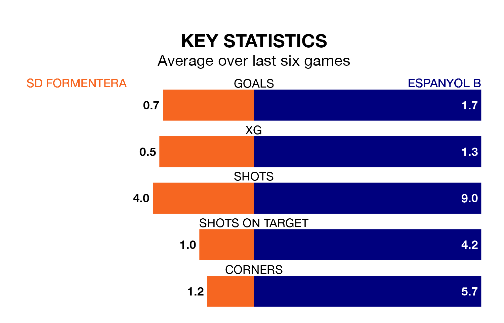

SD Formentera host Espanyol B on Sunday at the Estadio Municipal in the Segunda División RFEF Group 3.
In their last league match, on March 17, Formentera lost to Lleida Esportiu 3-0 away.
Espanyol B also lost, 3-2 away at Valencia B, with Ian Forns Montes and Kenneth Soler Fernández on the scoresheet.
With 29 goals in 27 games so far this season, Formentera are scoring at below the league average rate with 1.1 goals per game. And they are conceding at an average rate, letting in 33 goals at a rate of 1.2 per game.
Espanyol B, meanwhile, are above average scorers, with 1.3 goals per game, compared to a league average of 1.2. They have conceded 1.2 goals per game.
The away team are sixth in the table after 27 games, of which they have won 10 and drawn eight, earning 38 points.
The hosts are six places behind Espanyol B in 12th, with nine wins and six draws putting them on 33 points.
In the last five years, Formentera and Espanyol B have played each other on five occasions. Formentera won one of them, Espanyol B three, and they drew once.
On average, Formentera scored 0.2 goals and Espanyol B 0.8 in those matches.
Their last meeting was on November 12, when Formentera won 1-0 away.
Formentera are in mixed form in the Segunda División RFEF Group 3, with two wins and a draw from their last six games.
With four wins and two losses over that period, Espanyol B's form is better – they have taken 12 points from 18, compared to Formentera's seven.
Updated: 10:19 (UTC), 22/03/24